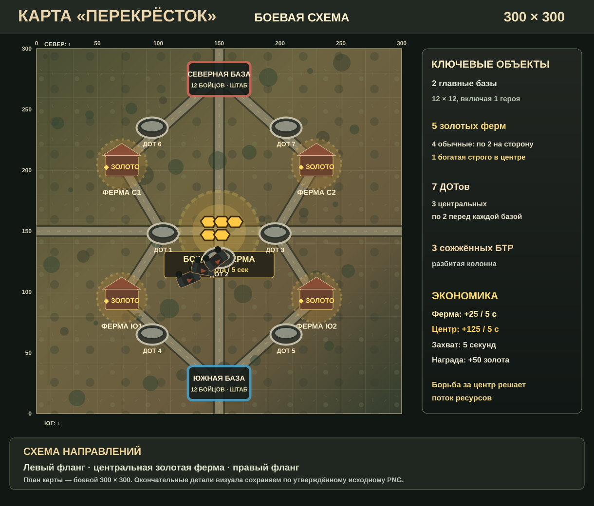

Вермахт (красные) против британцев (синие). Перед боем изучите карту и экономику — заставка закрывается только по кнопке «В бой».

Нажмите на карту для увеличения. Оригинал утверждённого иллюстрированного чертежа сохранён отдельно в библиотеке Battlefield.
«Обзор: боец» делает солдат крупнее на экране, сохраняя высоту и направление камеры. «Обзор: поле» показывает больше местности. Авто подстраивает разрешение под устройство. Коллизии, игровая экономика и анимации не меняются.
Расчёт — 2 бойца. Потеря расчёта останавливает огонь; свободные бойцы заменяют погибших.
| Оружие | Дальность | Сектор | Перезарядка |
|---|---|---|---|
| Пулемёт | 72 м | 120° | 6 с / 60 патр. |
| Полевая пушка | 18–105 м | 80° | 7 с / снаряд |
Пулемёт: 18 урона и подавление. Пушка: до 90 урона, осколки в радиусе 4,5 м. Стены перекрывают огонь, укрытие снижает попадания и действие осколков. Боезапас позиций пополняется при перезарядке.
Подбитая техника: Tykryk, CC BY 4.0
🔵 Британцы против 🔴 Вермахта. Карта 300×300 с пятью золотыми фермами, семью ДОТами и тремя подбитыми БТР. После старта дополнительные 3D-бойцы появляются постепенно. Подключён загрузчик оригинальных GLB и система переноса анимаций с проверкой скелета и хвата. Для героя и Jakeli используются сохранённые GLB: это предварительная интеграция, а не одобрение проблемной анимации Jakeli. Отдельный Командос ещё не установлен: его временный прототип не является утверждённой моделью. Посмотреть выбранные оригинальные модели · Проверить GLB и хват оружия. Оружие: Lee-Enfield, Sten, Bren и временный PIAT. Снаряжение — в режиме паузы; обход препятствий и защитные сооружения добавлены, но анимация перезарядки и анимации Jakeli пока требуют отдельной приёмки.